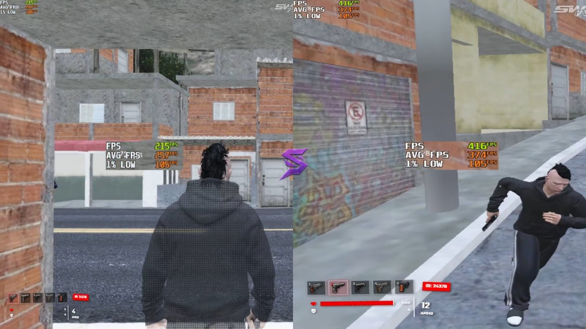

Come aumentare gli FPS su FiveM (GTA RP): guida 2026

Stessa zona, a sinistra le impostazioni di partenza, a destra dopo l'ottimizzazione con SapoTweak.
Su FiveM gli scatti arrivano nei momenti peggiori: un inseguimento in auto, una sparatoria, l'arrivo in una zona piena di giocatori. Questa guida ti spiega cosa puoi fare gratis per avere più FPS e meno scatti, in ordine di importanza.
1. Perché su FiveM gli FPS cambiano da server a server
FiveM usa il motore di GTA V, ma ogni server aggiunge mappe, auto, vestiti e script propri. Più contenuti personalizzati ci sono, più il PC deve lavorare. Per questo lo stesso PC può fare 200 FPS su un server e 90 su un altro.
- FPS medi: quanti fotogrammi al secondo fai in media.
- 1% low: gli FPS nei momenti peggiori, per esempio in città piene o in auto ad alta velocità. Su FiveM sono i più importanti.
Come misurarli: confronta sempre nella stessa zona dello stesso server, alla stessa ora. Un parcheggio affollato la sera e una strada vuota la mattina danno risultati diversi anche senza cambiare niente.
2. Impostazioni grafiche consigliate
Le trovi nelle impostazioni di GTA V dentro FiveM: Impostazioni → Grafica e Grafica avanzata.
| Impostazione | Consiglio | Perché |
|---|---|---|
| Tipo di schermo | Schermo intero | Meno input lag rispetto a finestra senza bordi. |
| Risoluzione | Quella nativa del monitor | Immagine nitida. |
| Modalità scala frame | Disattivata (1.0, mai sotto 0.9) | Valori più bassi rendono tutto sfocato. |
| V-Sync | Disattivato | Aggiunge input lag. |
| Qualità texture | In base alla memoria della scheda video | Normale con 4 GB, alta con 6-8 GB, molto alta oltre. |
| MSAA | Disattivato | Pesa molto; usa FXAA se vuoi bordi più lisci. |
| Qualità erba | Normale | In campagna è una delle voci più pesanti. |
| Ombre e riflessi | Normali / bassi | Pesano molto in città. |
| Densità e varietà popolazione | Al minimo | Meno persone e auto da gestire per il processore. |
| Distanza estesa e ombre lunghe | Disattivate | Riempiono la memoria e causano scatti. |
Attenzione: alcuni server impongono le proprie regole sulla grafica o sui pacchetti grafici. Leggi sempre il regolamento del tuo server prima di installare qualsiasi mod.
3. Cache di FiveM e texture che non caricano
FiveM salva sul PC i contenuti scaricati dai server. Col tempo questi file si accumulano e a volte si danneggiano, causando caricamenti lenti e texture rovinate.
- Chiudi FiveM.
- Apri la cartella dati di FiveM: di solito è
%localappdata%\FiveM\FiveM.app\data(incollalo nella barra di Esplora file). - Elimina le cartelle cache, server-cache e server-cache-priv. Non toccare le altre.
- Riapri FiveM: il primo ingresso nel server sarà più lento, poi andrà meglio.
Texture che non caricano (strade e palazzi sfocati): quasi sempre la memoria della scheda video è piena. Abbassa la qualità delle texture e disattiva la distanza estesa.
4. Windows: le 6 cose da controllare
- Driver della scheda video aggiornati: scaricali dal sito NVIDIA, AMD o Intel.
- Frequenza del monitor: in Impostazioni → Schermo → Schermo avanzato controlla che il monitor non sia rimasto a 60 Hz.
- Programmi in background: chiudi browser, launcher e overlay che non usi. Tieni aperto solo Discord se ti serve per il RP.
- Modalità gioco: in Impostazioni → Giochi → Modalità gioco, tienila attiva.
- Registrazione in background: se non la usi, disattiva le acquisizioni in background della Xbox Game Bar.
- Risparmio energia: sui portatili gioca con l'alimentatore collegato e la modalità "Prestazioni migliori".
5. Hardware: errori comuni che costano FPS
- Gioco su disco lento: GTA V e la cache di FiveM su SSD riducono di molto caricamenti e scatti in città.
- RAM insufficiente o in single channel: FiveM ne usa tanta. Con 16 GB in due banchi (e XMP/EXPO attivo nel BIOS) la differenza si sente.
- Cavo del monitor nella scheda madre invece che nella scheda video: sui PC fissi è un errore classico.
- Temperature alte: dopo ore di RP CPU e GPU si scaldano e rallentano. Pulire la polvere dalle ventole aiuta.
6. Fare tutto con un clic
Seguire questa guida richiede tempo, e alcune ottimizzazioni di Windows sono difficili da fare a mano senza rischi. SapoTweak è un programma per Windows che lo fa per te:
- Profilo FiveM con un clic: legge le impostazioni attuali e il tuo hardware (scheda video, memoria, monitor) e ti mostra cosa cambierà prima di applicarlo.
- Oltre 150 ottimizzazioni di Windows pensate per il gaming, con backup automatico e ripristino in qualsiasi momento.
- Sicuro: non tocca anti-cheat, file del gioco o mod, e modifica le impostazioni solo a gioco chiuso.
- Supporto su Discord per qualsiasi dubbio.
Sulla home puoi vedere il confronto video prima/dopo su FiveM. I risultati dipendono dal tuo PC e dal server.
Vuoi più FPS senza perdere tempo?
Prova SapoTweak: 9,99 € al mese, disdici quando vuoi.
7. Domande frequenti
Perché faccio meno FPS su alcuni server FiveM?
Ogni server ha mappe, veicoli, vestiti e script diversi. Più contenuti personalizzati ci sono, più lavoro deve fare il PC: per questo lo stesso PC può fare FPS molto diversi da un server all'altro.
Svuotare la cache di FiveM aumenta gli FPS?
Non aumenta gli FPS medi, ma risolve spesso caricamenti lenti, texture rovinate e scatti dovuti a file vecchi o danneggiati. È utile farlo dopo grossi aggiornamenti del server.
Perché le texture non caricano e la mappa resta sfocata?
Quasi sempre la memoria della scheda video (VRAM) è piena. Abbassa la qualità delle texture e disattiva le opzioni di distanza estesa: le texture torneranno a caricarsi in tempo.
Ottimizzare il PC può causare un ban sui server FiveM?
Cambiare le impostazioni di Windows o quelle grafiche del gioco non è un cheat. SapoTweak non tocca anti-cheat, file del gioco o mod e non installa pacchetti grafici: modifica le impostazioni solo a gioco chiuso e salva sempre un backup.